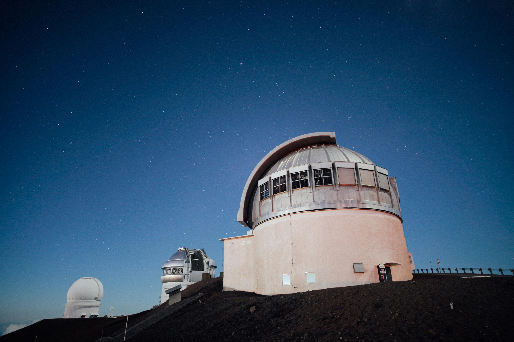

Founding and Early Days
The Suryagadhi Sahid Memorial Observatory was founded in 2024 by a group of passionate astronomers and researchers dedicated to advancing our understanding of the universe. The observatory began as a modest initiative, aiming to make astronomical research accessible to the public and foster a love for space exploration.
Milestones and Achievements
Over the years, the observatory has achieved numerous milestones. From pioneering research in dark matter to launching educational programs that reach thousands of students annually, our commitment to exploring the cosmos has never wavered. We are proud of our contributions to the field of astronomy and our role in inspiring future generations of scientists and explorers.
Our Vision for the Future
As we look to the future, our goal remains to expand our research capabilities, enhance our educational outreach, and continue to provide a platform for astronomical discovery. We are dedicated to pushing the boundaries of knowledge and fostering a deeper connection between humanity and the universe.